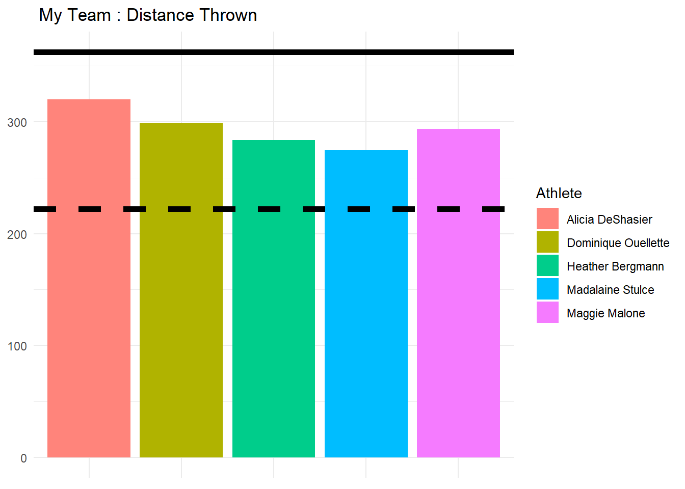

This is a project that I did using track and field data using R to show which athletes I would want on my team, fantasy draft style. The event of interest I picked was the women’s javelin.
| Event | Male_Female | EventID | Athlete | Flight1 | Flight2 | Flight3 | Flight4 | Flight5 | Flight6 |
|---|---|---|---|---|---|---|---|---|---|
| Shot Put | Male | 1 | Ryan Whiting | 21.29 | 21.00 | 0.00 | 0.0 | 21.80 | 21.53 |
| Shot Put | Male | 1 | Cory Martin | 20.85 | 0.00 | 0.00 | 0.0 | 20.61 | 20.93 |
| Shot Put | Male | 1 | Kurt Roberts | 20.89 | 19.63 | 0.00 | 0.0 | 0.00 | 20.55 |
| Shot Put | Male | 1 | Derrick Vicars | 19.36 | 0.00 | 0.00 | 0.0 | 19.19 | 19.83 |
| Shot Put | Male | 1 | Jacob Thormaehlen | 18.35 | 18.92 | 0.00 | 19.1 | 0.00 | 19.52 |
| Shot Put | Male | 1 | Rob Golabek | 18.49 | 18.34 | 18.62 | 18.4 | 19.20 | 18.72 |
This is what first 5 rows of the uncleaned data looks like.
I’m going to clean it up a bit. The changes I’ll make include:
Male and Female are their own columns
Going to gather the data from wide to long so there is only 1 column for throws
Select the Womens Javelin event
Change the column labeled “Distance” to the data type to numeric to make later analysis easier
| EventID | Athlete | Flight | Distance |
|---|---|---|---|
| 8 | Brittany Borman | 1 | 54.02 |
| 8 | Ariana Ince | 1 | 48.97 |
| 8 | Kara Patterson | 1 | 50.14 |
| 8 | Kimberley Hamilton | 1 | 47.96 |
| 8 | Laura Loht | 1 | 44.40 |
| 8 | Brianna Bain | 1 | 49.31 |
The next step is to create the total results for each event for each athlete, as well as create some summary statistics to better describe their performance.
These stats include total distance thrown, standard deviation of their throws and the number of successful throws they had.
| Athlete | EventID | TotalDistance | StandardDev | Success |
|---|---|---|---|---|
| Sharon Day-Monroe | 1766 | 246.43 | 2.284 | 5 |
| Sharon Day-Monroe | 1773 | 227.03 | 3.229 | 5 |
| Tairyn Montgomery | 176 | 235.10 | 2.870 | 5 |
| Tiffany Forbito | 498 | 232.79 | 2.416 | 5 |
| Tiffany Forbito | 511 | 143.84 | 3.235 | 3 |
| Tiffany Forbito | 681 | 182.23 | 1.692 | 4 |
# Create first_3, last_3, and diff between the two
javelin <- javelin %>% mutate(first_3 = Flight1 + Flight2 + Flight3 , last_3 = Flight4 + Flight5 + Flight6, diff = last_3 - first_3)
#Select columns to to keep from javelin and javelin totals
keep <- c("Athlete", "TotalDistance", "StandardDev", "Success", "diff")
javelin_totals <- left_join(javelin_totals, javelin, by = c("EventID", "Athlete"), all.x = T) %>% subset( select = keep)| Athlete | TotalDistance | StandardDev | Success | diff |
|---|---|---|---|---|
| Abigail Gomez | 151.76 | 1.232 | 3 | -52.88 |
| Abigail Gomez | 244.12 | 1.633 | 5 | -48.00 |
| Abigail Gomez | 206.71 | 2.969 | 4 | -110.39 |
| Abigail Gomez | 221.83 | 1.295 | 4 | -3.11 |
| Abigail Gomez | 154.80 | 1.028 | 3 | 53.40 |
I’ll normalize the summary statistics so they can be properly compared. The goal of normalization is to change the values of numeric columns in the dataset to a common scale, without distorting differences in the ranges of values so that they can be used for comparison.
This puts the stats on a scale between 0.0 - 1.0. Being closer to 1.0 is better.
#function to normalize summary stats
norm <- function(result) {
(result - min(result)) / (max(result) - min(result))
}
aggstats <- c("TotalDistance", "StandardDev", "Success", "diff")| Athlete | TotalDistance | StandardDev | Success | diff |
|---|---|---|---|---|
| Abigail Gomez | 0.4459534 | 0.2678973 | 0.4500000 | 0.3828542 |
| Abigail Gomez Hernandez | 0.2439924 | 0.1146165 | 0.2500000 | 0.7195185 |
| Alicia DeShasier | 0.7529941 | 0.3267327 | 0.8333333 | 0.6870598 |
| Allison Updike | 0.2831123 | 0.6392012 | 0.2500000 | 0.3203585 |
| Alyssa Olin | 0.4688902 | 0.2497063 | 0.5000000 | 0.3089929 |
| Ariana Ince | 0.6602443 | 0.3419779 | 0.6923077 | 0.4460812 |
To determine who the best athletes are, let’s assign weights to the athletes for their distance, standard deviation of distance, if they were successful in their throw and the difference in their throws. Weights sum to 10.
More weight placed in a statistic means it is more important. A total score which is higher means that the athlete is ranked as a better player.I placed the most weight in TotalDistance since I consider this the most important stat.
weights <- c(3.5, 2, 3, 1.5)
#creating total score by multiplying columns by their weights
javelin_team <- javelin_norm %>%
mutate(TotalScore = TotalDistance * weights[1] + StandardDev * weights[2] +
Success + weights[3] + diff * weights[4]) %>%
arrange(desc(TotalScore))| Athlete | TotalDistance | StandardDev | Success | diff | TotalScore |
|---|---|---|---|---|---|
| Madalaine Stulce | 0.7082461 | 0.7445880 | 1.0000000 | 0.4944579 | 8.709724 |
| Dominique Ouellette | 0.7876658 | 0.4825474 | 1.0000000 | 0.5347030 | 8.523979 |
| Maggie Malone | 0.7704656 | 0.3290821 | 0.7500000 | 0.7868895 | 8.285128 |
| Alicia DeShasier | 0.7529941 | 0.3267327 | 0.8333333 | 0.6870598 | 8.152868 |
| Heather Bergmann | 0.7370625 | 0.3764054 | 1.0000000 | 0.5326896 | 8.131564 |
| Diana Sammai Martinez | 0.6658357 | 0.3926833 | 1.0000000 | 0.5736924 | 7.976330 |
| Athlete | TotalDistance | StandardDev | Success | diff | TotalScore |
|---|---|---|---|---|---|
| Madalaine Stulce | 0.7082461 | 0.7445880 | 1.0000000 | 0.4944579 | 8.709724 |
| Dominique Ouellette | 0.7876658 | 0.4825474 | 1.0000000 | 0.5347030 | 8.523979 |
| Maggie Malone | 0.7704656 | 0.3290821 | 0.7500000 | 0.7868895 | 8.285128 |
| Alicia DeShasier | 0.7529941 | 0.3267327 | 0.8333333 | 0.6870598 | 8.152868 |
| Heather Bergmann | 0.7370625 | 0.3764054 | 1.0000000 | 0.5326896 | 8.131564 |
I’ll see how my teams stats compares to the maximum and average of distance thrown as well as the maximum and average of the difference in an athletes last three and first three throws. In a business setting, I could use these plots of their stats to justify why I would want these athletes on my team. We can see all our athletes throw well above the average, with two of our athletes throwing longer on their last three then first three throws. We could say these are our “clutch” players.
The maximum stat is represented by the solid line and the average by the dashed.

And here’s our teams stats compared to the maximum and average stats of all athletes.
| Athlete | TotalDistance | StandardDev | Success | diff |
|---|---|---|---|---|
| Alicia DeShasier | 319.86 | 2.257 | 6 | 0.74 |
| Dominique Ouellette | 299.21 | 2.804 | 6 | -3.51 |
| Heather Bergmann | 283.43 | 2.278 | 6 | 2.41 |
| Madalaine Stulce | 274.76 | 4.472 | 6 | -6.42 |
| Maggie Malone | 293.48 | 1.996 | 5 | 61.12 |
| MaxAve | Statistic | Aggregate |
|---|---|---|
| Maximum | TotalDistance | 362.540000 |
| Average | TotalDistance | 222.048483 |
| Maximum | StandardDev | 5.994000 |
| Average | StandardDev | 2.056079 |
| Maximum | Success | 6.000000 |
| Average | Success | 4.432584 |
| Maximum | diff | 110.340000 |
| Average | diff | -7.720056 |
Using summary statistics, data normalization and valuing what statistics are most important based on assignment of weights, I’ve identified what athletes I would consider to be the cream of the crop. Having all these competitors on one team would surely result in a tough match for any opposition.